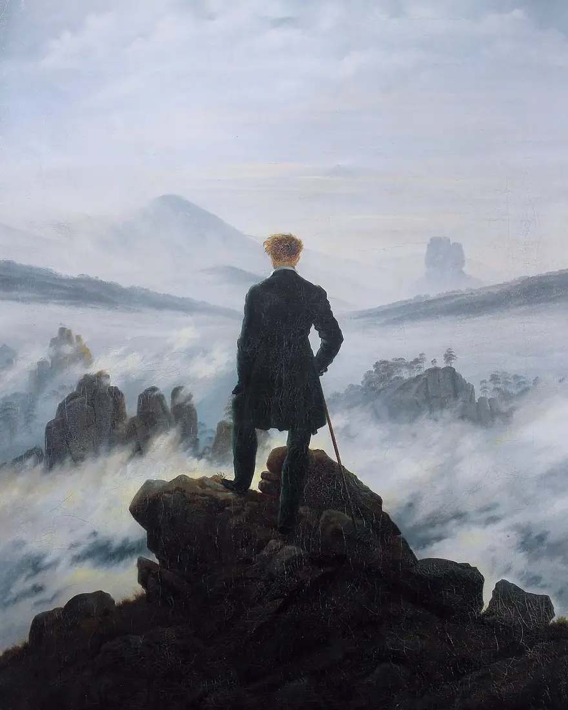
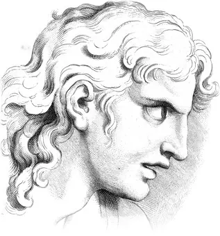
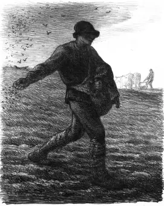
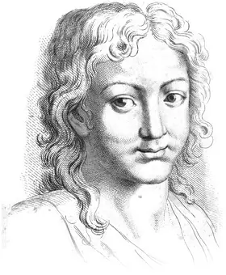
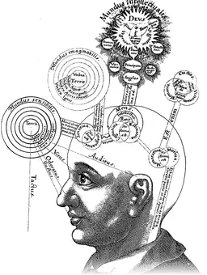
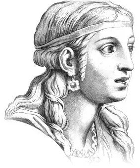
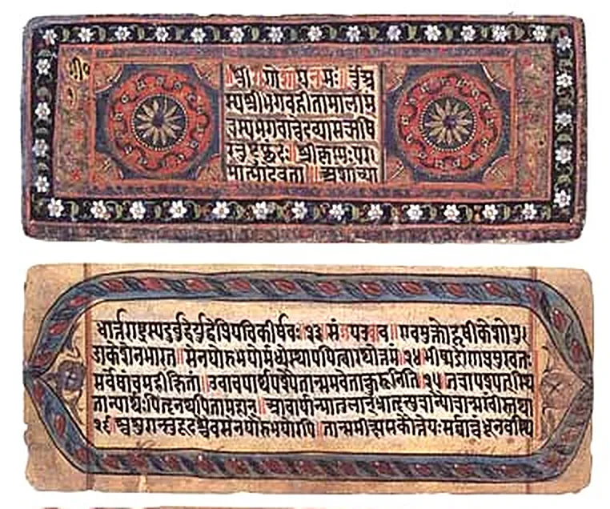

Créditos das imagens
Licenças conferidas na página de cada arquivo em 17 de novembro de 2026.
Todas as pinturas e gravuras do teste são obras antigas, em domínio público. Nenhuma imagem foi feita por inteligência artificial.

O caminhante sobre o mar de névoa
Caspar David Friedrich, c. 1817–1818. Óleo sobre tela. Hamburger Kunsthalle, Hamburgo.
Licença: domínio público. Arquivo: Wikimedia Commons. O que mudou: recorte.


L’Attention
Charles Le Brun (desenho) e Martin Engelbrecht (editor), prancha 2 de Expressions des passions de l’Âme, Augsburgo, 1732. Gravura. The Metropolitan Museum of Art, Nova York, nº 53.600.3163.
Licença: CC0 (acesso aberto do Met). Arquivo: Wikimedia Commons. O que mudou: cinza, tom do papel retirado e recorte.


O semeador
Jean-François Millet, 1851. Litografia, segundo estado (impressão póstuma, de 1879 ou depois). The Metropolitan Museum of Art, Nova York, nº 23.65.11.
Licença: domínio público (acesso aberto do Met). Registro: metmuseum.org. O que mudou: cinza, papel levado ao branco e recorte da margem.

La Joye tranquille
Charles Le Brun (desenho) e Martin Engelbrecht (editor), prancha 8 de Expressions des passions de l’Âme, Augsburgo, 1732. Gravura. The Metropolitan Museum of Art, Nova York, nº 53.600.3163.
Licença: CC0 (acesso aberto do Met). Arquivo: Wikimedia Commons. O que mudou: cinza, tom do papel retirado e recorte.


De triplici animae in corpore visione
Robert Fludd, em Utriusque cosmi maioris scilicet et minoris historia, tomo II, 1619. Gravura.
Licença: domínio público. Arquivo: Wikimedia Commons. O que mudou: recorte, a mão do canto de baixo apagada e a base esmaecida.


L’Admiration avec étonnement
Charles Le Brun (desenho) e Martin Engelbrecht (editor), prancha 4 de Expressions des passions de l’Âme, Augsburgo, 1732. Gravura. The Metropolitan Museum of Art, Nova York, nº 53.600.3163.
Licença: CC0 (acesso aberto do Met). Arquivo: Wikimedia Commons. O que mudou: cinza, tom do papel retirado e recorte.


Bhagavad Gita, manuscrito
Autor desconhecido, norte da Índia, século XIX. Manuscrito em papel. Library of Congress, Asian Division (Southern Asian Collection), Washington.
Licença: domínio público. Arquivo: Wikimedia Commons. O que mudou: recorte das duas primeiras folhas e ampliação.

Letras: Geist e Geist Mono (Vercel) e Newsreader (Production Type), todas sob a SIL Open Font License.